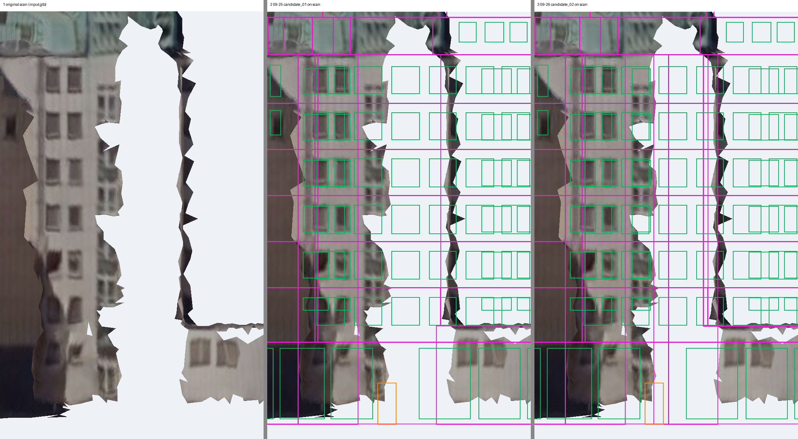
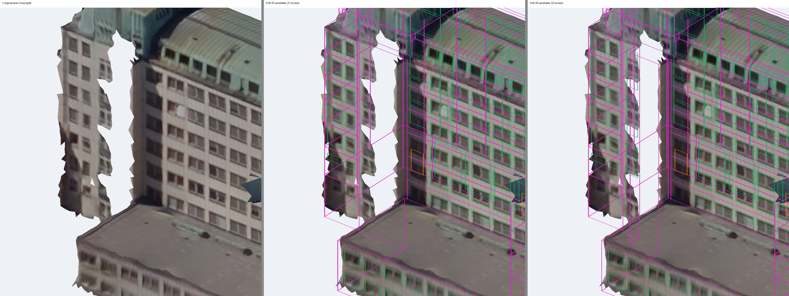
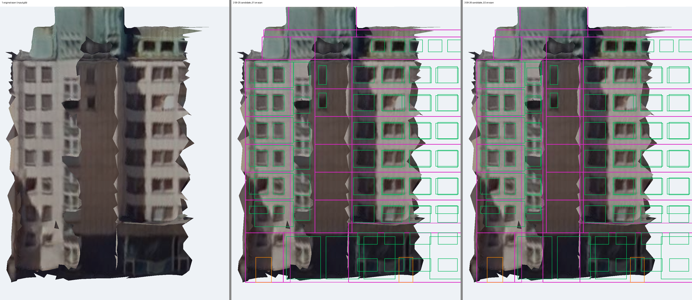
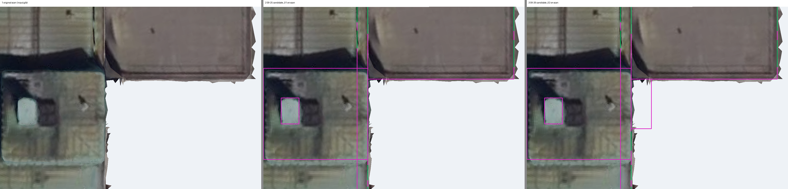
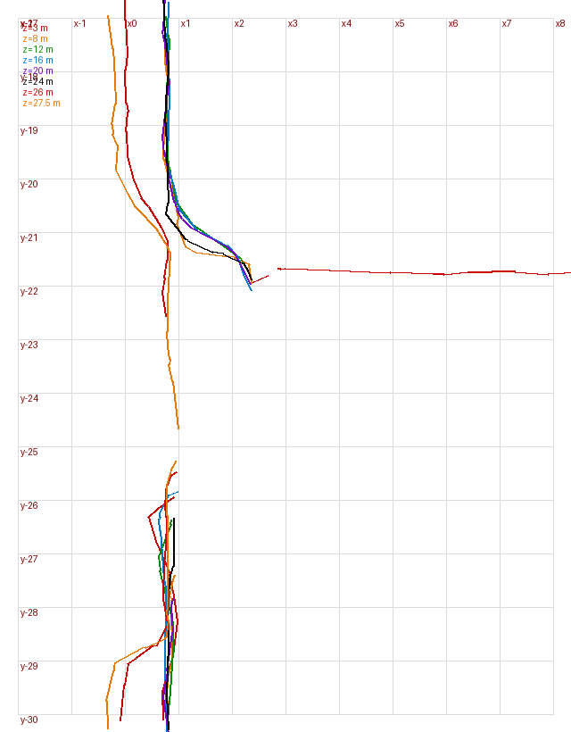
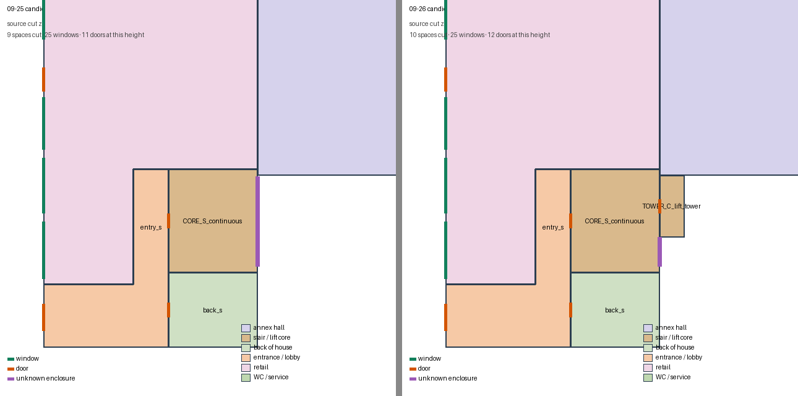
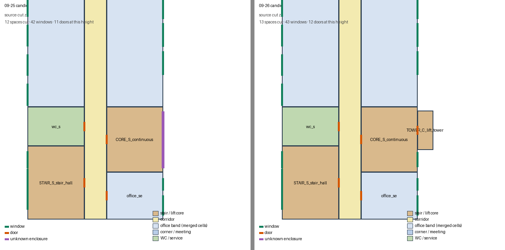

Opus 5.5 开发助手在 09-25 candidate_01 之上只补一处外部缺失：内院南段被单体裁切掉的突出体，以及与它相连的南核院面。其余空间、窗和门与 09-25 完全相同。不是工作模型成绩，内部与用途仍是方案假设。
本轮：81个源空间体 · 306组窗 · 95处门 · 15个含未知区域的边界。
09-25：80个空间体 · 300组窗 · 88处门 · 15个未知边界。
打开旋转查看（原纹理/BIM/叠合） · 原网格叠图与剖切 · 09-25 查看页（对照） · 源BIM · 源检查报告 · 方案声明 · 量测记录 · 验证 · 说明
| 项 | 内容 |
|---|---|
| 原扫描看到了什么（观测） | 内院长墙南段 y -25.8 到 -21.9 之间每一层、从地面到约 27 m 都是一个“洞”，从内院看进去直接看到沿街墙的背面；洞的两侧各有一小段从墙面伸出来的侧墙残片（北侧伸出约 1.6 m，南侧约 0.5 m），一直到约 25.6–26 m 高；附属低体的南墙从 x≈2.4 往东是扫描到的朝南外墙（有窗）；俯视图里这块没有任何屋顶残留。 |
| 怎么解释（判断） | 这是一栋贴在内院墙上的全高小塔体，被“单体裁切”一起切掉了，不是透空、也不是通道。侧墙残片给出宽度（约 4.2 m）和最少伸出量；附属低体南墙露在外面给出最大伸出量（不超过约 2.9 m）。取 1.7 m 深、顶在主屋面 25.25 m。 |
| 补成了什么（推断） | 一个从首层到七层的连续塔体空间（不加中间楼板），每层一扇门通向南核（F1–F7 共 7 扇）；北面首层段与附属低体贴邻。用途按电梯井塔推断：南核随之改读为电梯厅＋可放次楼梯的核心，其院面多格玻璃竖列在二至七层补为逐层推断窗（6 组，窗高沿用同层旁边已观测的院面窗）。 |
| 仍不确定 | 塔体深度只能约束在约 1.6–2.1 m；用途也可能是卫生间/服务竖向叠层或管井，那样东面可能有小窗；塔顶以上到约 27 m 的扫描洞、玻璃竖列首层段仍标未知；电梯台数、梯段不建模。短翼内院东端扫描洞本轮未处理。 |
紫线=源外墙边，绿=窗，橙=门。第 2 格里洞口位置只有一段标“未知”的墙；第 3 格多出伸向内院的塔体轮廓、通向南核的门和玻璃竖列窗。






